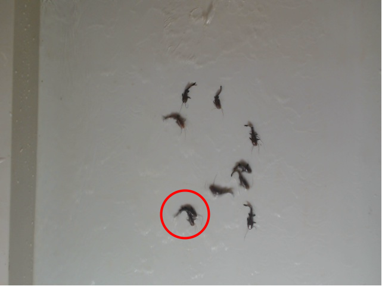
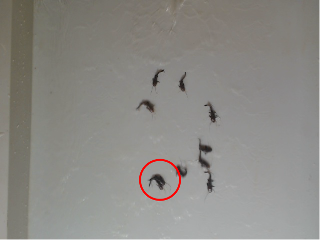
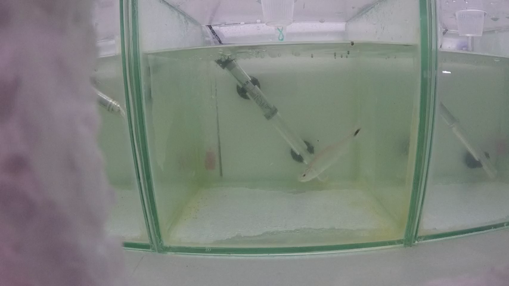
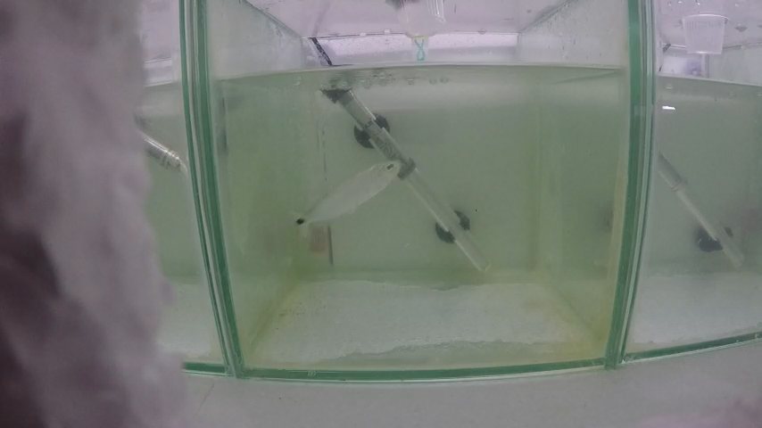

Capítulo 5
Conclusões
Neste capítulo são apresentadas as conclusões deste trabalho. Na Seção 5.1 é realizado um paralelo entre os objetivos desta tese e os resultados obtidos. Na Seção 5.2 são discutidas algumas limitações das soluções propostas e na Seção 5.3 são apresentadas algumas direções de trabalhos futuros.
5.1 Resumo dos Objetivos e Principais Resultados
O objetivo principal deste trabalho foi apresentar a capacidade de aplicar camadas convolucionais para contar objetos em vídeos, considerando as posições dos mesmos no quadro anterior. Assim são estimados um mapa de densidade e a estimativa de deslocamento de alevino.
O melhor resultado obtido alcançou 98% de acertos avaliados pela métrica F1, o que nos mostra que a técnica proposta se ajusta positivamente ao conjunto de dados. A métrica de erro MAE afirma que os equívocos cometidos pela rede em camadas é próximos a 0. O objetivo de refinar o mapa de características utilizando os vetor de deslocamento foi alcançado visto que os melhores resultados se mostraram a partir do processamento das posições que precedem o quadro atual.
5.2 Limitações
Os alevinos estão em constante movimento nos vídeos, porém existem alguns peixes, geralmente dois(ou até mais) que se juntam e mantém um certo movimento uniforme confundindo a CNN, fazendo-a detectar apenas um peixe naquela posição na imagem. Como o deslocamento dos dois são análogos nos quadros anteriores , no quadro atual processado não há possibilidade de se distinguir um do outro. O pico apontado pela CNN para estes peixes extremamente próximos é único e como a detecção é obtida através deles, a CNN detecta estes peixes como um. Na imagem 5.1 temos um exemplo de dois peixes que se movimentam igualmente sem indicar uma desaproximação.

quadro 187
quadro 1885.3 Trabalhos Futuros
O fato de ocorrer peixes muito próximos nos faz entender que a técnica deverá abordar este tipo de situação. No qual serão testados técnicas para distinguir tais alevinos de maneira com que cada um seja detectado e somado a contagem final.
O método proposto será reavaliado em outro banco de imagens, para averiguar o potencial da técnica em detectar peixes em várias situações do mundo real. Nas imagens da Figura 5.2 temos amostras do banco a ser utilizado em novos experimentos.

quadro 4810
quadro 6253